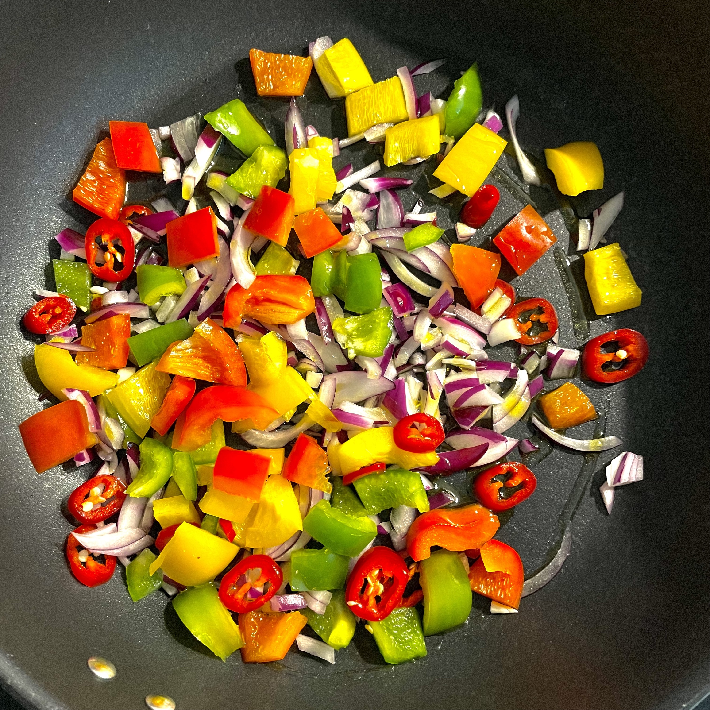
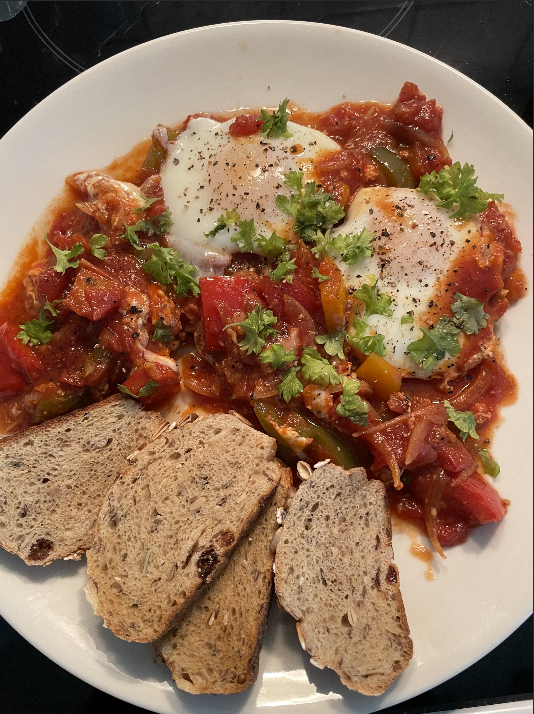

Ingredients
2-4 servings
- 1 white or red onion (200 g), finely diced
- 1 red bell pepper, cut into thin slices
- 2- 4 large eggs "zerowka"
- favorite bread, to serve
- cilantro, to serve
- oil, for frying
Spices:
- 1 teaspoon ground coriander
- 1 teaspoon ground cumin
- ¼ teaspoon smoked paprika
- 2-3 cloves of garlic, squeezed through a press
- 1 teaspoon of tomato paste
- ¼ teaspoon of chilli
- ¼ teaspoon of cane sugar
- 1 can (400 g) of canned sliced tomatoes
- ½ cup (120 ml) vegetable broth or water
- ¾ teaspoon salt
Instructions
- Heat a lot of olive oil in a large skillet. Fry the onion with a pinch of salt over moderate heat until it is glassy, 4 - 5 minutes. Add the bell peppers and fry for about 6 more minutes, until softened. Add cilantro, cumin, smoked paprika and garlic. Stir, releasing all the flavors. Add tomato paste, harissa and cane sugar. Stir-fry for another 2 - 3 minutes, until the resulting paste turns darker in color and begins to stick to the bottom.
- add canned tomatoes, cherry tomatoes, broth or water and salt. Bring to a boil, reduce the heat and simmer for 10 - 15 minutes until the sauce is reduced and the flavor comes through. Season with freshly ground pepper and salt and sugar, if necessary. Sometimes a pinch of sugar can bring out all the sweetness hidden in canned tomatoes.
- with a wooden spoon, make four indentations. Crack the eggs into it and season with salt. Cover with a lid and cook for 3 more minutes. Remove from the heat without lifting the lid. Set aside for 2 minutes to let the top of the eggs "come to". Drizzle with a splash of olive oil and sprinkle generously with cilantro, if you like. Basil or parsley will also do.